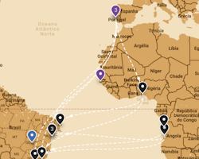
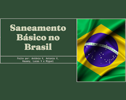
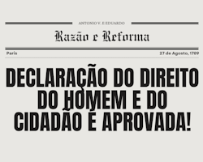
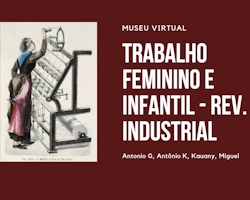
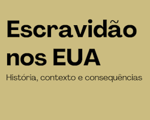

Mapa Travessia dos Escravizados
O objetivo desse trabalho era criar um mapa interativo (na plataforma Padlet ou similar) com os principais pontos do tráfico de escravizados para o Brasil, e do comércio triangular. A partir dessa premissa, elaboramos em grupo um mapa com 'pinpoints' nas principais localizações do tema, incluindo portos, sedes de companhias e afins. Para a pesquisa e obtenção dos dados, utilizamos o site SlaveVoyage e outros sites educacionais. Particularmente, o trabalho ajudou a elucidar a minha visão quanto ao tema a partir de dados e pelo próprio mapa, o que resultou numa compreensão pessoal melhor sobre o assunto.

Painel Soluções Para o Brasil
Nesse trabalho, era necessário propor soluções para algum problema pré-selecionado do Brasil, especificando as soluções por região. O grupo que fiz parte ficou com o tópico de saneamento básico, onde exploramos diversas questões, desde o tratamento de água pluvial, desigualdade no acesso até dados por região e demais. Como solução, de forma resumida, propusemos principalmente maior investimento público na área, junto da construção e implementação de tecnologias relacionadas.

Jornal sobre a Revolução Francesa
Neste trabalho, dividiram-se grupos para produzirem um jornal sobre a Revolução Francesa que abordasse a visão de mundo, interesses e vocabulário de algum grupo social específico da época. Elaboramos um jornal da Burguesia Iluminista, tendo como evento a Declaração dos Direitos do Homem (em 1789). O trabalho me ajudou a compreender as diferentes nuances entre os grupos sociais presentes na época, os impactos que as radicais mudanças sociais tiveram sobre esses grupos e vice-versa.
Habilidades: C1 - Compreender processos históricos sociais e geográficos nos diversos aspectos da vida em sociedade, H1 - Reconhecer o processo de formação do indivíduo nos aspectos históricos, geográficos, sociais e filosóficos, H2 - Compreender o processo de socialização do indivíduo, considerando os princípios do pensamento e da lógica.

Museu Virtual
Para este trabalho, deveríamos criar uma "sala" (ala) de um museu que abordasse um tema específico da Revolução Industrial, trazendo fatos históricos, imagens. charges etc. Meu grupo teve como tema "O Trabalho Infantil e Feminino nas Fábricas". Achei uma proposta muito interessante, por envolver a pesquisa e compreensão das condições de trabalho de grupos sociais específicos da época, e me auxiliou a compreender melhor as consequências da Revolução Industrial e seu processo como um todo.
Habilidades: C3 - Compreender o ser humano como agente de transformação dos espaços e territórios considerando os aspectos políticos, econômicos e sociais, H15 - Reconhecer os movimentos sociais e sua representação da coletividade como elemento de transformação da realidade social, política, econômica e cultural.

Escravidão nos EUA
O objetivo dessa atividade era pesquisar e se aprofundar em algum tema específico da história dos EUA, e formular uma apresentação com base na pesquisa. Meu grupo pesquisou o tema da Escravidão nos EUA, trazendo um retrospecto histórico desde a fundação das Treze Colônias até os dias atuais. Considero esse trabalho fundamental para a compreensão dos dilemas sociais dos EUA, e pesquisar quanto à essa cronologia expandiu meu senso crítico e olhar sociológico.
Habilidades: C2 - Compreender a importância do trabalho na constituição das sociedades e na formação dos sujeitos, C6 - Avaliar a sociedade como um sistema complexo, estruturado sob os aspectos políticos, econômicos, sociais e geoambientais, H9 - Reconhecer os impactos da divisão do trabalho na realidade socioeconômica e cultural, H37 – Reconhecer características do sistema de organização social, política e econômica.
?o que voce ta fazendo aqui ainda estamos no segundo trimestre